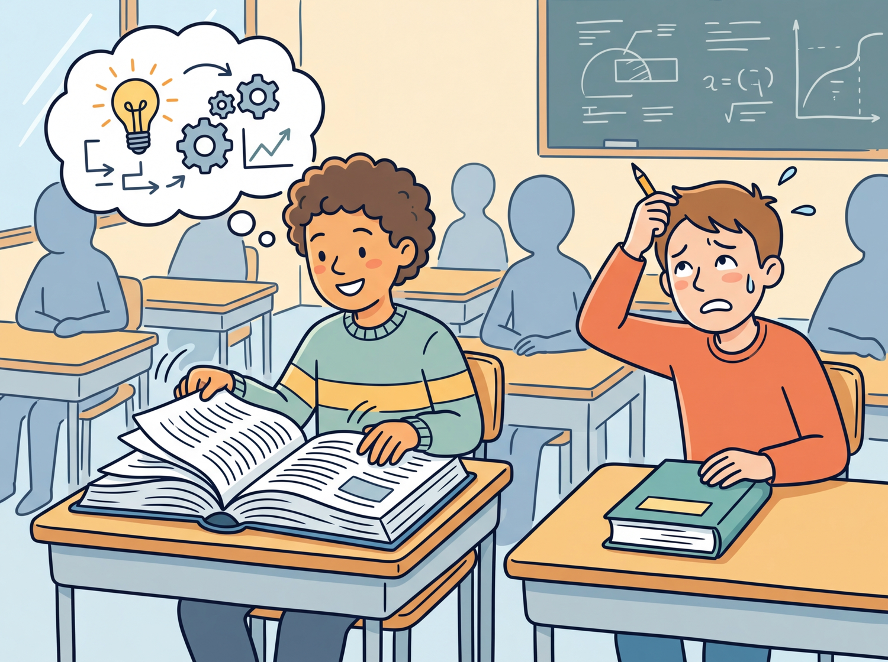

The best students are not the ones who memorize the most. They are the ones who know exactly which book to open and which page to turn to.
RAG AI Agent

Prerequisites
RAG builds on the embedding and retrieval infrastructure covered in Chapter 19. You should understand how text embedding models produce dense vectors (Section 19.1), how vector indexes enable fast similarity search (Section 19.2), and how documents are chunked for retrieval (Section 19.4). Familiarity with LLM API patterns from Section 10.1 will help you understand the generation side of the pipeline.
RAG bridges the gap between what an LLM knows and what it needs to know. Rather than encoding all knowledge in model parameters, RAG retrieves relevant documents at inference time and injects them into the prompt. This simple idea yields enormous practical benefits: reduced hallucination, up-to-date information, domain-specific expertise, and full source attribution. Understanding the fundamental architecture, its failure modes, and when to choose RAG over fine-tuning is the foundation for everything else in this chapter. The embedding and vector database infrastructure from Chapter 19 provides the retrieval backbone that RAG depends on.
For a hands-on tutorial building RAG pipelines with LlamaIndex, see Appendix O: LlamaIndex.
1. Why Retrieval-Augmented Generation? Basic
Large language models store knowledge implicitly in their parameters during pretraining. This parametric knowledge has three fundamental limitations. First, it has a knowledge cutoff: the model knows nothing about events after its training data was collected. Second, it is incomplete: no model can memorize every fact from its training corpus, especially rare or domain-specific information. Third, it is unverifiable: when a model generates a claim, there is no way to trace that claim back to a specific source document.
Retrieval-Augmented Generation, introduced by Lewis et al. (2020), addresses all three limitations by adding an explicit retrieval step before generation. The model receives both the user's query and a set of retrieved documents, then generates a response grounded in the retrieved evidence. This approach combines the generative fluency of LLMs with the factual precision of information retrieval systems.
Think of it like the difference between a closed-book exam and an open-book exam. A standard LLM takes a closed-book exam: it can only answer from what it memorized during training. RAG gives the model an open book. It can look up relevant passages before answering, cite its sources, and say "I could not find that information" when the book does not cover the topic. The result is answers that are more accurate, more current, and more trustworthy.
The original RAG paper by Lewis et al. (2020) was published while GPT-3 was still brand new. The authors could not have predicted that within four years, "just add RAG" would become the default answer to almost every enterprise LLM question.
RAG formalizes a distinction that epistemologists have debated for centuries: the difference between knowledge stored "in the head" (parametric) and knowledge accessed "from the world" (non-parametric). In philosophy, this parallels the debate between rationalism (knowledge derives from innate structures) and empiricism (knowledge derives from external evidence). A pure LLM is a rationalist system: everything it knows is baked into its parameters. RAG introduces an empiricist channel, grounding the model's responses in external evidence that can be verified, updated, and audited. This architectural choice has profound implications for trust and accountability. When a RAG system provides citations, it enables the user to verify claims against sources, a form of epistemic transparency that purely parametric models cannot offer. The "open book exam" analogy is precise: it shifts the model from claiming to "know" things to demonstrably "looking them up."
1.1 The Core RAG Loop
Every RAG system follows the same fundamental loop. Algorithm 1 formalizes the naive RAG pipeline, which serves as the foundation for the more advanced retrieval patterns covered later in this chapter.
Input: user query q, knowledge base KB, embedding model E, LLM G, top-k parameter k
Output: grounded response with citations
1. Encode: q_vec = E(q) // embed the query
2. Retrieve: docs = top_k_similar(q_vec, KB, k) // vector similarity search
3. Augment: prompt = format(q, docs) // insert docs into prompt template
e.g., "Given the following context: {docs}\n\nAnswer: {q}"
4. Generate: response = G(prompt) // LLM generates grounded answer
5. return response (with source citations from docs)
The simplicity of this pipeline is both its strength and its limitation. Each stage introduces potential failure points: the query embedding may not capture intent (step 1), retrieval may return irrelevant documents (step 2), the prompt may exceed the context window (step 3), or the LLM may ignore the retrieved context (step 4). The rest of this chapter addresses these failure modes systematically. Figure 20.1.1 illustrates the four stages of a naive RAG pipeline.
2. The Ingestion Pipeline Intermediate
Before retrieval can happen, documents must be processed and indexed. The ingestion pipeline transforms raw documents (PDFs, web pages, databases, Markdown files) into searchable chunks stored in a vector database. The quality of this pipeline directly determines the quality of retrieved results, making it one of the most important components of any RAG system.
2.1 Document Loading and Preprocessing
The first step is loading documents from their source format and extracting clean text. This involves handling diverse formats (PDF, HTML, DOCX, CSV), removing boilerplate content (headers, footers, navigation), preserving meaningful structure (headings, tables, lists), and extracting metadata (title, author, date, source URL) for later filtering.
2.2 Chunking Strategies
Raw documents are typically too long to fit in a single retrieval result. Chunking splits documents into smaller segments that can be independently embedded and retrieved. The choice of chunking strategy profoundly affects retrieval quality: chunks that are too small lose context, while chunks that are too large dilute relevance and waste context window space. Code Fragment 20.1.1 below puts this into practice.
Common Chunking Approaches
This snippet compares fixed-size, sentence-based, and recursive chunking strategies for splitting documents.
# implement chunk_by_tokens, chunk_by_structure
# Key operations: chunking strategy
import tiktoken
def chunk_by_tokens(text, max_tokens=512, overlap=50):
"""Split text into chunks with token-level control."""
encoder = tiktoken.encoding_for_model("gpt-4")
tokens = encoder.encode(text)
chunks = []
start = 0
while start < len(tokens):
end = start + max_tokens
chunk_tokens = tokens[start:end]
chunk_text = encoder.decode(chunk_tokens)
chunks.append({
"text": chunk_text,
"token_count": len(chunk_tokens),
"start_token": start
})
start = end - overlap # Slide window with overlap
return chunks
def chunk_by_structure(markdown_text):
"""Split markdown by headings, preserving document structure."""
sections = []
current_section = {"heading": "", "content": []}
for line in markdown_text.split("\n"):
if line.startswith("#"):
if current_section["content"]:
sections.append(current_section)
current_section = {
"heading": line.strip("# "),
"content": []
}
else:
current_section["content"].append(line)
if current_section["content"]:
sections.append(current_section)
return [{
"text": "\n".join(s["content"]),
"metadata": {"heading": s["heading"]}
} for s in sections]
The optimal chunk size depends on your use case. For question-answering, 256 to 512 tokens works well because each chunk should contain a single coherent answer. For summarization, larger chunks (1024+ tokens) preserve more context. Always include overlap between consecutive chunks (10 to 15% of chunk size) to avoid splitting important information across chunk boundaries. For a deep dive into chunking approaches, see Section 19.4.
2.3 Embedding and Indexing
After chunking, each chunk is converted into a dense vector using an embedding model and stored in
a vector database. The embedding model's quality is critical: it determines whether semantically
similar queries and documents will have similar vector representations. Popular embedding models
include OpenAI's text-embedding-3-small, Cohere's embed-v3, and open-source
options like BAAI/bge-large-en-v1.5.
Code Fragment 20.1.2 below puts this into practice.
# implement ingest_chunks
# Key operations: embedding lookup, chunking strategy, API interaction
from openai import OpenAI
import chromadb
client = OpenAI()
chroma = chromadb.PersistentClient(path="./chroma_db")
collection = chroma.get_or_create_collection(
name="documents",
metadata={"hnsw:space": "cosine"}
)
def ingest_chunks(chunks, source_doc):
"""Embed and store chunks in ChromaDB."""
texts = [c["text"] for c in chunks]
# Batch embed (max 2048 texts per API call)
response = client.embeddings.create(
model="text-embedding-3-small",
input=texts
)
embeddings = [item.embedding for item in response.data]
# Store with metadata for filtering
collection.add(
ids=[f"{source_doc}_chunk_{i}" for i in range(len(chunks))],
embeddings=embeddings,
documents=texts,
metadatas=[{
"source": source_doc,
"chunk_index": i,
"heading": chunks[i].get("metadata", {}).get("heading", "")
} for i in range(len(chunks))]
)
return len(chunks)
3. Naive RAG: The Retrieve-and-Generate Pattern Intermediate
The simplest RAG implementation follows a straightforward pattern: embed the user query, retrieve the top-k most similar chunks from the vector database, concatenate them into a prompt, and pass the augmented prompt to the LLM. Despite its simplicity, this "naive RAG" approach delivers substantial improvements over ungrounded generation for many use cases. Figure 20.1.2 shows the complete ingestion pipeline.
# implement naive_rag
# Key operations: retrieval pipeline, chunking strategy, RAG pipeline
def naive_rag(query, k=5):
"""Simple retrieve-and-generate RAG pipeline."""
# Step 1: Retrieve relevant chunks
results = collection.query(
query_texts=[query],
n_results=k
)
retrieved_docs = results["documents"][0]
sources = results["metadatas"][0]
# Step 2: Build augmented prompt
context = "\n\n---\n\n".join(
[f"[Source: {s['source']}]\n{doc}"
for doc, s in zip(retrieved_docs, sources)]
)
prompt = f"""Answer the question based on the provided context.
If the context does not contain enough information, say so clearly.
Cite the source documents used in your answer.
Context:
{context}
Question: {query}
Answer:"""
# Step 3: Generate grounded response
response = client.chat.completions.create(
model="gpt-4o",
messages=[{"role": "user", "content": prompt}],
temperature=0.1
)
return {
"answer": response.choices[0].message.content,
"sources": sources,
"num_chunks_used": len(retrieved_docs)
}
4. Context Window Management Intermediate
Modern LLMs have large context windows (128K tokens for GPT-4o, 200K for Claude), but stuffing the entire context window with retrieved documents is rarely optimal. Research has revealed important patterns in how LLMs process long contexts that directly affect RAG system design.
4.1 The Lost-in-the-Middle Problem
Liu et al. (2024) demonstrated that LLMs attend more strongly to information at the beginning and end of their context, with reduced attention to content in the middle. This "U-shaped" attention pattern means that documents placed in the middle of a long context are more likely to be ignored. For RAG systems, this implies that simply concatenating many retrieved documents can actually hurt performance if the most relevant document ends up in the middle of the context.
Experiments show that LLMs correctly use information placed at position 1 or position 20 in a list of 20 documents roughly 80% of the time, but performance drops to around 60% for documents at positions 8 through 12. To mitigate this effect: (1) limit the number of retrieved documents to 3 to 5, (2) place the most relevant document first, and (3) consider reranking by relevance before context insertion. Code Fragment 20.1.4 below puts this into practice.
4.2 Optimal Context Sizing
This snippet experiments with different context window sizes to find the optimal balance between recall and relevance.
# implement build_context_with_budget
# Key operations: retrieval pipeline, chunking strategy
def build_context_with_budget(retrieved_chunks, token_budget=4000):
"""Pack chunks into context respecting a token budget.
Places highest-relevance chunks first (primacy effect)."""
encoder = tiktoken.encoding_for_model("gpt-4o")
context_parts = []
total_tokens = 0
for chunk in retrieved_chunks: # Already sorted by relevance
chunk_tokens = len(encoder.encode(chunk["text"]))
if total_tokens + chunk_tokens > token_budget:
break
context_parts.append(chunk["text"])
total_tokens += chunk_tokens
return "\n\n---\n\n".join(context_parts), total_tokens
5. When RAG Beats Fine-Tuning Advanced
RAG and fine-tuning are complementary approaches to adapting LLMs, not competing ones. However, understanding when each approach is more appropriate helps practitioners avoid costly mistakes. The decision framework depends on several factors including knowledge volatility, the nature of the task, and available resources.
| Factor | Favor RAG | Favor Fine-Tuning |
|---|---|---|
| Knowledge freshness | Data changes frequently (news, docs) | Stable knowledge domain |
| Source attribution | Citations required | Attribution not needed |
| Data volume | Large corpus (thousands of docs) | Small, curated dataset |
| Task type | Factual Q&A, search, research | Style adaptation, format control |
| Latency tolerance | Slight additional latency acceptable | Minimal latency required |
| Hallucination risk | Must be minimized with evidence | Acceptable with guardrails |
| Cost model | Per-query retrieval cost | One-time training cost |
In practice, the best production systems often combine RAG and fine-tuning. Fine-tuning teaches the model how to use retrieved context effectively (following instructions, citing sources, admitting uncertainty), while RAG provides the what (the actual knowledge). This combination outperforms either approach alone for most enterprise applications.
6. Indexing Strategies for Large Corpora Intermediate
When your knowledge base contains millions of documents, naive flat indexing becomes impractical. Several indexing strategies help maintain retrieval quality at scale.
6.1 Hierarchical Indexing
Hierarchical indexing creates multiple levels of abstraction. At the top level, document summaries are indexed. When a query matches a summary, the system then searches within that document's chunks for specific passages. This two-stage approach dramatically reduces the search space while maintaining recall.
6.2 Metadata Filtering
Adding metadata to chunks enables pre-retrieval filtering that narrows the search space before vector similarity is computed. Common metadata fields include document type, creation date, author, department, language, and topic tags. This filtering can be combined with vector search for efficient hybrid retrieval. Figure 20.1.5 illustrates how hierarchical indexing narrows the search space.
7. Evaluation and Common Failure Modes Advanced
Evaluating a RAG system requires measuring both retrieval quality and generation quality independently. The RAG triad framework assesses three dimensions: context relevance (did we retrieve the right documents?), groundedness (does the answer stick to the retrieved context?), and answer relevance (does the answer address the original question?).
7.1 Common Failure Modes
- Retrieval failure: The correct document exists in the knowledge base but is not retrieved, often because the query and document use different terminology.
- Context poisoning: Irrelevant or contradictory documents are retrieved, causing the LLM to generate incorrect answers grounded in bad context.
- Lost in the middle: The relevant document is retrieved but placed in the middle of the context where the LLM pays less attention to it.
- Abstention failure: The model generates a confident answer instead of admitting the context is insufficient to answer the question.
- Context overflow: Too many retrieved chunks exceed the token budget, causing truncation or performance degradation.
Tools like RAGAS (Retrieval Augmented Generation Assessment), TruLens, and DeepEval provide automated metrics for evaluating RAG pipelines. RAGAS computes faithfulness, answer relevance, and context precision scores using LLM-as-judge approaches. For production systems, a combination of automated metrics and human evaluation on a golden test set provides the most reliable quality signal.
8. RAG vs. Long Context Windows Advanced
The rapid expansion of context windows raises a fundamental question: if a model can accept 1 million tokens or more in a single prompt, is RAG still necessary? Models like Gemini 1.5 Pro (1M tokens), Claude 3 (200K tokens), and GPT-4o (128K tokens) can process entire codebases, full books, or large document collections in a single request. Some practitioners have concluded that "just stuff everything in the context" eliminates the need for retrieval infrastructure. This conclusion, while tempting, overlooks several critical factors that keep RAG relevant even in an era of enormous context windows.
8.1 Why RAG Still Matters
Cost and economics. Long-context inference is expensive. Processing 1M tokens through a frontier model costs orders of magnitude more than embedding a query and retrieving 5 relevant chunks. For a production system handling thousands of queries per hour against a 10M-token knowledge base, the cost difference between "retrieve then generate" and "load everything into context" can be 100x or greater. RAG allows you to pay embedding costs once at indexing time, then pay only for the retrieved subset at query time. For most enterprise workloads, this economic advantage is decisive.
Latency. Prefill time scales with context length. Processing 1M tokens takes seconds to tens of seconds even on high-end hardware, whereas a RAG system can retrieve relevant chunks and generate a response with a context of a few thousand tokens in under a second. For interactive applications where users expect sub-second responses, RAG provides a latency profile that long-context approaches cannot match. The time-to-first-token for a 1M token prompt is fundamentally constrained by the compute required to process the full attention matrix.
Freshness and dynamic knowledge. RAG systems can incorporate new information the moment it is indexed. When a document is updated, the RAG pipeline re-chunks and re-embeds it, making the new content immediately available to queries. Long-context approaches require re-loading the entire corpus for every request, and they cannot incorporate changes that occur between requests without rebuilding the full prompt. For knowledge bases that change hourly or daily (support tickets, news feeds, regulatory updates), RAG provides a natural mechanism for staying current.
Privacy and access control. RAG pipelines can enforce document-level access controls during retrieval. A user with clearance for Department A's documents sees only Department A's chunks in their context, even though the full knowledge base spans all departments. With a long-context approach, access control requires either maintaining separate prompts per user role or implementing complex filtering logic before context assembly. RAG's retrieval stage is a natural enforcement point for per-document permissions.
Accuracy at scale. Research on the "lost in the middle" problem (discussed in Section 4) shows that models struggle to attend equally to all parts of very long contexts. Information placed in the middle of a 100K+ token context is less likely to be used accurately than information placed at the beginning or end. RAG sidesteps this problem by placing only the most relevant chunks in context, ensuring they are in a position where the model attends to them reliably. Empirical studies have shown that for needle-in-a-haystack retrieval tasks, RAG with good retrieval outperforms naive long-context approaches once the corpus exceeds roughly 50K tokens.
8.2 When Long Context Wins
Long context does offer genuine advantages in specific scenarios. For tasks requiring holistic understanding of a single large document (such as summarizing an entire book, analyzing patterns across a full codebase, or answering questions that require synthesizing information scattered across many pages), long-context models can outperform RAG because they have access to the complete document and its structure. RAG's chunking process inevitably loses cross-chunk relationships and document-level structure. Additionally, for small, static knowledge bases (under 50K tokens), simply including the full content in context avoids the complexity of building and maintaining a retrieval pipeline.
8.3 Hybrid Approaches
The most effective production systems increasingly combine both approaches. A retrieve-then-read hybrid uses RAG to narrow a large corpus to the most relevant documents, then passes those complete documents (not just chunks) into a long-context model. This combines RAG's precision in finding relevant material with the long-context model's ability to reason across the full document structure. Another pattern uses RAG as a first pass, then applies a long-context model to re-rank and synthesize across the top retrieved results.
Google's Gemini team has documented a context caching approach that offers a middle ground. Frequently accessed documents are cached in the model's context at a reduced per-token rate, allowing repeated queries against the same corpus without re-processing the full context each time. This reduces the cost disadvantage of long-context approaches while preserving their holistic understanding advantage. However, caching is currently limited to a single session and does not solve the freshness or access control challenges.
RAG and long context are complementary, not competing, paradigms. RAG excels at efficient, cost-effective retrieval from massive, dynamic knowledge bases with access controls. Long context excels at holistic reasoning over moderate-sized document sets. The best production systems use RAG to select relevant material and long context to reason deeply over it. As context windows continue to grow and costs decline, the boundary between these approaches will shift, but the fundamental advantages of retrieval (cost, latency, freshness, privacy) ensure RAG remains a core architectural pattern.
| Dimension | RAG | Long Context | Hybrid |
|---|---|---|---|
| Cost per query | Low (small context) | High (full corpus) | Medium |
| Latency | Fast (sub-second) | Slow (seconds) | Moderate |
| Freshness | Real-time updates | Static per request | Real-time |
| Access control | Natural enforcement | Complex to implement | Natural enforcement |
| Holistic reasoning | Limited by chunking | Strong | Strong |
| Corpus scale | Unlimited | Limited by window | Unlimited |
Show Answer
Show Answer
Show Answer
Show Answer
Show Answer
Split documents at paragraph or section boundaries rather than fixed token counts. A 512-token chunk that splits a sentence in half creates two useless fragments. Use heading detection or sentence boundaries as natural split points.
Key Takeaways
- RAG = Retrieve + Augment + Generate: The pattern retrieves relevant documents, injects them into the prompt, and generates grounded responses. This addresses LLM knowledge cutoffs, incompleteness, and unverifiability.
- Ingestion quality determines retrieval quality: The chunking strategy, chunk size, overlap, metadata preservation, and embedding model choice all critically affect downstream retrieval performance.
- Context window management matters: The lost-in-the-middle effect means that simply adding more documents can hurt performance. Limit to 3 to 5 high-quality chunks and place the most relevant ones first.
- RAG and fine-tuning are complementary: Use fine-tuning to teach the model how to use context effectively; use RAG to supply the knowledge. The combination outperforms either alone.
- Evaluate both retrieval and generation: The RAG triad (context relevance, groundedness, answer relevance) provides a comprehensive framework for diagnosing failures at each pipeline stage.
Who: A DevOps engineer and an ML engineer at a 500-person software company
Situation: Engineers spent an average of 45 minutes per day searching across Confluence, Notion, and Slack for answers to internal process questions (deployment procedures, on-call runbooks, architecture decisions).
Problem: A vanilla LLM chatbot hallucinated confidently about internal procedures it had never seen. Simply stuffing documents into the prompt exceeded the context window and cost $0.12 per query.
Dilemma: Fine-tuning the model on internal docs would bake in stale information (procedures changed weekly). Pure keyword search missed semantic matches (e.g., "how to roll back a deploy" vs. "revert production release").
Decision: They built a naive RAG pipeline: embed all documentation into a vector store, retrieve the top 5 chunks per query, and pass them as context to GPT-4 with explicit grounding instructions.
How: Documents were chunked at 400 tokens with 50-token overlap, embedded with text-embedding-3-small, and stored in Qdrant. The system prompt instructed the model to cite chunk sources and say "I don't know" when context was insufficient.
Result: Engineers reported 70% fewer failed searches. Average query cost dropped to $0.008. The grounding instruction reduced hallucinations from 34% to 4% on a 200-question evaluation set.
Lesson: A well-constructed naive RAG pipeline with clear grounding instructions solves the majority of internal knowledge retrieval problems before you need any advanced techniques.
Hands-On Lab: Build a Complete RAG Pipeline from Scratch
Objective
Build a complete Retrieval-Augmented Generation pipeline: ingest documents, embed and index them, retrieve relevant passages for a query, and generate a grounded answer with source citations.
What You'll Practice
- Document ingestion and chunking for a RAG knowledge base
- Building a vector index with sentence-transformers
- Implementing retrieval with cosine similarity search
- Crafting RAG prompts that ground the LLM in retrieved context
- Adding source citations to generated answers
Setup
The following cell installs the required packages and configures the environment for this lab.
pip install openai sentence-transformers numpyYou will need an OpenAI API key (or any OpenAI-compatible endpoint).
Steps
Step 1: Create the knowledge base
Define a set of documents simulating an internal company wiki.
knowledge_base = [
{"id": "doc1", "title": "Vacation Policy",
"text": "All full-time employees receive 20 days of paid vacation per year. Vacation days accrue monthly at 1.67 days per month. Unused days carry over up to 10 days maximum. Requests for 3+ consecutive days need 2 weeks advance notice."},
{"id": "doc2", "title": "Remote Work Policy",
"text": "Employees may work remotely up to 3 days per week with manager approval. Core hours are 10 AM to 3 PM local time. A stable internet connection and dedicated workspace are required. International remote work requires HR and Legal approval."},
{"id": "doc3", "title": "Health Benefits",
"text": "Three health plans available: Basic (80% coverage, $1500 deductible), Standard (90%, $750), Premium (95%, $250). Dental and vision included in Standard and Premium. Open enrollment occurs annually in November."},
{"id": "doc4", "title": "Expense Reimbursement",
"text": "Submit expenses within 30 days. Receipts required over $25. Meals reimbursed up to $75/day during travel. Domestic flights: economy class. International flights over 6 hours: business class. Hotels up to $200/night."},
{"id": "doc5", "title": "Performance Reviews",
"text": "Reviews conducted in June and December. Self-assessment required before each review. Manager rating on 1 to 5 scale. Rating 4+ qualifies for bonus. Two consecutive ratings below 2 triggers a performance improvement plan."},
]
print(f"Knowledge base: {len(knowledge_base)} documents")
for doc in knowledge_base:
print(f" [{doc['id']}] {doc['title']} ({len(doc['text'])} chars)")
Hint
In production, these documents would come from files, databases, or web scraping, and each would be chunked into smaller pieces. For this lab, each document is already a reasonable chunk size.
Step 2: Build the vector index
Encode all documents into embeddings for similarity search.
from sentence_transformers import SentenceTransformer
import numpy as np
embed_model = SentenceTransformer("all-MiniLM-L6-v2")
doc_texts = [doc['text'] for doc in knowledge_base]
doc_embeddings = embed_model.encode(doc_texts)
doc_norms = np.linalg.norm(doc_embeddings, axis=1)
print(f"Index built: {doc_embeddings.shape}")
Hint
Pre-computing doc_norms avoids recomputing them on every query, making search faster.
Step 3: Implement retrieval
Build a function that finds the most relevant documents for a query.
def retrieve(query, top_k=2):
"""Retrieve top-k documents by cosine similarity."""
q_emb = embed_model.encode(query)
scores = np.dot(doc_embeddings, q_emb) / (doc_norms * np.linalg.norm(q_emb))
top_idx = np.argsort(scores)[::-1][:top_k]
return [(knowledge_base[i], scores[i]) for i in top_idx]
# Test
for q in ["How many vacation days do I get?", "Can I work from home?",
"What health insurance options exist?", "How do I submit expenses?"]:
results = retrieve(q, top_k=2)
print(f"\nQ: {q}")
for doc, score in results:
print(f" [{score:.3f}] {doc['title']}")
Hint
Retrieval should return the vacation policy for vacation questions, remote work policy for WFH questions, and so on. If results look wrong, check that embeddings were computed correctly.
Step 4: Build the RAG generation pipeline
Combine retrieval with LLM generation, grounding answers in retrieved context.
from openai import OpenAI
client = OpenAI()
def rag_answer(query, top_k=2):
"""Retrieve context and generate a grounded answer."""
retrieved = retrieve(query, top_k)
# Build context with source labels
context = "\n\n".join(
f"[Source {i+1}: {doc['title']}]\n{doc['text']}"
for i, (doc, _) in enumerate(retrieved))
system = ("You are a helpful HR assistant. Answer ONLY from the provided "
"context. Cite sources with [Source N]. If the context does not "
"cover the question, say so clearly.")
user_msg = f"Context:\n{context}\n\nQuestion: {query}\n\nAnswer:"
response = client.chat.completions.create(
model="gpt-4o-mini",
messages=[{"role": "system", "content": system},
{"role": "user", "content": user_msg}],
temperature=0.3, max_tokens=300)
answer = response.choices[0].message.content
sources = [doc['title'] for doc, _ in retrieved]
return answer, sources
# Test the full pipeline
for q in ["How many vacation days do I get?", "Can I work from home?",
"What health plans are available?", "How do I expense meals?"]:
answer, sources = rag_answer(q)
print(f"\nQ: {q}\nA: {answer}\nSources: {sources}\n{'='*50}")
Hint
The system prompt is critical: instruct the model to answer ONLY from context, cite sources, and admit uncertainty. Temperature 0.3 reduces hallucination risk.
Step 5: Test with out-of-scope queries
Verify the system handles unanswerable questions gracefully.
out_of_scope = [
"What is the company's stock price?",
"Who is the CEO?",
"What programming languages does engineering use?",
]
print("=== Out-of-Scope Query Test ===")
for q in out_of_scope:
answer, sources = rag_answer(q)
print(f"\nQ: {q}\nA: {answer}")
Hint
A well-prompted RAG system should say "I don't have enough information" rather than hallucinating. If the model invents answers, strengthen the system prompt.
Expected Output
- Retrieval returning the correct document for each in-scope query
- Generated answers citing sources and referencing facts from retrieved documents
- Out-of-scope queries receiving "I don't have enough information" responses
Stretch Goals
- Add a cross-encoder reranking step between retrieval and generation
- Implement query expansion: generate alternative phrasings before searching
- Add a confidence score based on retrieval similarity scores
Complete Solution
from sentence_transformers import SentenceTransformer
from openai import OpenAI
import numpy as np
client = OpenAI()
embed_model = SentenceTransformer("all-MiniLM-L6-v2")
kb = [
{"id":"doc1","title":"Vacation Policy","text":"20 days PTO per year. Accrue 1.67/month. Carry over max 10 days. 2 weeks notice for 3+ days."},
{"id":"doc2","title":"Remote Work","text":"Up to 3 days/week remote with manager approval. Core hours 10AM-3PM. International needs HR/Legal."},
{"id":"doc3","title":"Health Benefits","text":"Basic (80%/$1500), Standard (90%/$750), Premium (95%/$250). Dental/vision in Standard+. November enrollment."},
{"id":"doc4","title":"Expenses","text":"Submit within 30 days. Receipts over $25. Meals $75/day. Domestic economy, international biz class 6hr+. Hotels $200/night."},
{"id":"doc5","title":"Reviews","text":"June and December. Self-assessment required. 1-5 scale. 4+ for bonus. Two sub-2 ratings triggers PIP."},
]
texts = [d['text'] for d in kb]
embs = embed_model.encode(texts)
norms = np.linalg.norm(embs, axis=1)
def retrieve(q, k=2):
qe = embed_model.encode(q)
scores = np.dot(embs, qe) / (norms * np.linalg.norm(qe))
idx = np.argsort(scores)[::-1][:k]
return [(kb[i], scores[i]) for i in idx]
def rag(q, k=2):
ret = retrieve(q, k)
ctx = "\n\n".join(f"[Source {i+1}: {d['title']}]\n{d['text']}" for i,(d,_) in enumerate(ret))
r = client.chat.completions.create(model="gpt-4o-mini",
messages=[{"role":"system","content":"Answer ONLY from context. Cite [Source N]. Say if info insufficient."},
{"role":"user","content":f"Context:\n{ctx}\n\nQ: {q}\nA:"}],
temperature=0.3, max_tokens=300)
return r.choices[0].message.content, [d['title'] for d,_ in ret]
for q in ["How many vacation days?","Can I work remotely?","Health plan options?","Who is the CEO?"]:
a, s = rag(q)
print(f"Q: {q}\nA: {a}\nSources: {s}\n{'='*50}")
Self-RAG (Asai et al., 2024) trains the LLM to decide when to retrieve, what to retrieve, and how to use retrieved passages, eliminating the need for a separate retrieval orchestrator. Corrective RAG (CRAG) adds a lightweight evaluator that assesses retrieved document relevance and triggers web search as a fallback when the initial retrieval is insufficient. Speculative RAG parallels speculative decoding by generating a draft response without retrieval and then verifying claims against retrieved evidence. Research into long-context models vs. RAG is exploring whether models with 1M+ token windows can replace RAG entirely for certain use cases, though evidence suggests RAG still outperforms long-context stuffing for precision-critical applications.
Exercises INTERMEDIATE
How to use these exercises: Conceptual questions test RAG fundamentals. Coding exercises build a working naive RAG pipeline.
An LLM confidently answers a question about a company's Q3 2024 earnings, but the information is wrong. How does RAG prevent this failure mode? What failure modes does RAG introduce instead?
Show Answer
RAG grounds the LLM in retrieved documents, reducing hallucination. It introduces new failure modes: (a) relevant document not retrieved (retrieval failure), (b) correct document retrieved but LLM ignores it (attention failure), (c) outdated or incorrect documents in the knowledge base (data quality failure).
Name the four stages of a naive RAG pipeline and describe what happens at each stage.
Show Answer
(1) Query encoding: convert user query to an embedding vector. (2) Retrieval: find the most similar document chunks from the vector store. (3) Augmentation: combine retrieved chunks with the query in a prompt template. (4) Generation: pass the augmented prompt to the LLM for answer generation.
A legal firm wants their LLM to answer questions about their proprietary case database. Should they use RAG or fine-tuning? What if the database changes weekly?
Show Answer
RAG is the clear choice. It handles weekly updates by re-indexing new documents without retraining. Fine-tuning would require retraining every week, is expensive, and risks catastrophic forgetting. RAG also provides citations to specific cases.
You retrieve 10 relevant chunks, but they total 8000 tokens and your prompt template plus instructions use 2000 tokens. Your model has a 4096-token context window. What strategies can you use?
Show Answer
Options: (a) reduce to top-K chunks by relevance score, (b) summarize retrieved chunks before inserting, (c) use a model with a larger context window, (d) implement a reranker to select only the most relevant chunks, (e) truncate lower-ranked chunks.
Models now support 128K+ context windows. Does this make RAG obsolete? Argue both sides and state your conclusion.
Show Answer
Against RAG: long context could ingest entire knowledge bases, eliminating retrieval errors. For RAG: long context is expensive (cost scales linearly), attention degrades over long sequences ("lost in the middle"), and dynamic knowledge bases still need a retrieval mechanism. Conclusion: RAG remains necessary for large-scale, dynamic, cost-sensitive applications, while long context helps with small, static corpora.
Build a minimal RAG pipeline: load a 10-page PDF, chunk it, embed with sentence-transformers, store in ChromaDB, and answer 5 questions. Compare answers with and without retrieval.
Using the same retrieval results, experiment with three prompt templates: (a) "Answer based on the context: {context}", (b) a structured template with numbered sources, (c) a template that instructs the model to cite sources. Compare answer quality and citation accuracy.
Deliberately create five queries that expose RAG failure modes: irrelevant retrieval, partial retrieval, conflicting sources, insufficient context, and hallucination despite context. Document each failure and propose a mitigation strategy.
Implement a two-level index: document summaries as the first level, section chunks as the second level. Compare retrieval precision against a flat single-level index on the same corpus.
What Comes Next
In the next section, Section 20.2: Advanced RAG Techniques, we explore advanced RAG techniques including query rewriting, re-ranking, and iterative retrieval for higher-quality results.
The foundational RAG paper that introduced the retrieve-then-generate paradigm. Essential reading for understanding how retrieval and generation components interact. Start here if you are new to RAG.
A comprehensive survey covering RAG taxonomies, techniques, and evaluation methods. Provides an excellent map of the RAG landscape as of 2024. Ideal for practitioners seeking a broad overview.
Ram, O. et al. (2023). "In-Context Retrieval-Augmented Language Models." TACL.
Explores how retrieval can be integrated into in-context learning without fine-tuning. Demonstrates strong performance on knowledge-intensive tasks. Recommended for researchers studying zero-shot RAG.
Introduces automated metrics for evaluating RAG pipelines, including faithfulness and answer relevancy. A practical framework that has become the standard for RAG evaluation. Must-read for anyone building production RAG.
Official tutorial covering end-to-end RAG implementation with LangChain. Includes code examples for document loading, chunking, and retrieval. Best starting point for hands-on RAG development.
LlamaIndex: Build RAG Applications.
Comprehensive documentation for the LlamaIndex framework with a focus on data ingestion and indexing. Offers advanced features like query engines and response synthesizers. Recommended for complex RAG architectures.